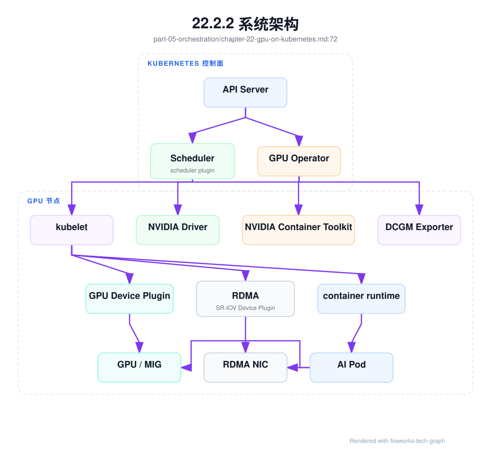
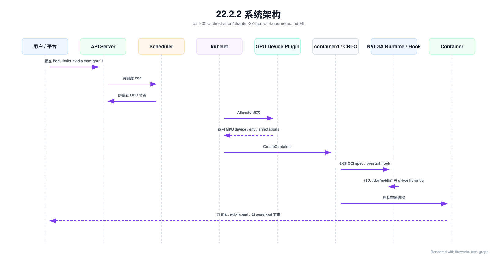
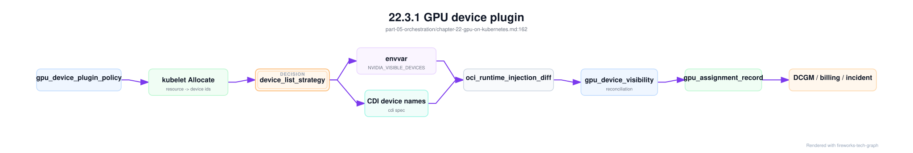
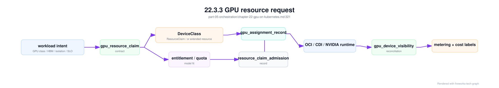
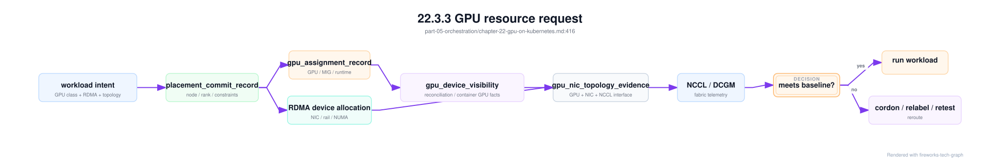

第 22 章：GPU on Kubernetes¶
22.1 导读¶
22.1.1 本章回答的问题¶
- Kubernetes 如何识别、分配和隔离 GPU？
- GPU device plugin、GPU Operator、MIG、time-slicing、Topology Manager、NUMA 和 RDMA device 如何协同？
- 容器访问 GPU 和 NIC 时，哪些地方最容易出问题？
22.1.2 本章上下文¶
- 层级定位：本章属于
资源编排与作业调度层，重点讨论容器、Kubernetes、GPU 调度、队列、Slurm 和多集群资源治理。 - 前置依赖：建议先理解 第 21 章：容器与 Kubernetes 中的核心对象和路径。
- 后续关联：本章内容会继续连接到 第 23 章：AI 作业队列与调度，并在系统地图、深度标准和读者测试中被交叉引用。
- 读完能力：读完本章后，读者应能把《GPU on Kubernetes》中的概念映射到 AI Factory 的生产路径、工程对象、观测证据和设计取舍。
22.1.3 读者测试¶
- 机制题：读者能否解释 GPU device plugin、GPU Operator、GPU resource request、MIG 的核心机制，以及它们如何共同支撑《GPU on Kubernetes》？
- 边界题：读者能否区分 资源编排与作业调度、GPU IaaS、Platform 层和 AI Runtime 层 的责任边界，并说明哪些问题不能简单归因到本章组件？
- 路径题：读者能否从 workload 提交追到队列、配额、调度、容器启动、GPU 分配和拓扑证据，并指出本章对象在路径中的位置？
- 排障题：当《GPU on Kubernetes》相关生产症状出现时，读者能否列出第一层证据、下一跳证据、可能 owner 和止血动作？
22.1.4 一个真实场景¶
一个 8 卡训练 Pod 成功调度到 GPU 节点，容器内 nvidia-smi 正常，Pod 也显示 Running。但训练启动后 NCCL 带宽远低于基线，偶尔还在初始化阶段超时。平台最初认为 Kubernetes 已经正确分配了 8 张 GPU，问题应该在模型或 NCCL。继续排查后发现，Pod 没有拿到对应 RDMA device，GPU 与 NIC 跨 NUMA，调度器也没有保证这 8 张 GPU 位于同一 NVLink/NVSwitch 域。
这个场景说明，GPU on Kubernetes 的目标不是“让容器看到 GPU”这么简单。AI workload 需要的是一条完整设备路径：正确 GPU、正确驱动、正确 runtime 注入、正确 CPU/NUMA 亲和、正确 RDMA NIC、正确网络配置、正确拓扑和可观测指标。任何一环缺失，任务都可能表现为性能差、初始化失败、延迟抖动或不可复现。
Kubernetes 原生扩展资源模型能表达“这个 Pod 需要 1 张 GPU”，但很难直接表达“需要同节点 8 张 H100、同一 NVSwitch 域、靠近某组 RDMA NIC、使用特定 MIG profile、满足某个 driver/CUDA 基线”。因此，GPU on Kubernetes 必须把 device plugin、Operator、节点标签、调度扩展、Topology Manager、RDMA device plugin 和平台准入结合起来。GPU 是资源，也是拓扑和软件栈。
这个场景也说明，GPU 分配成功只是资源编排的一部分。对训练而言，真正的验收点是 NCCL 能按基线通信；对推理而言，验收点是模型能在目标延迟内稳定输出 token；对多租户而言，验收点是隔离、计费和可观测都能对应到正确设备。Kubernetes 只负责把 Pod 放到节点并启动容器，AI Factory 还要证明这条路径满足 workload 目标。
因此，GPU on Kubernetes 的建设顺序应是先建立可验证路径，再追求更高利用率。没有基线和诊断时引入 MIG、time-slicing 或复杂拓扑，只会让问题更难定位。工程上要先回答“这条设备路径是否正确”，再回答“如何提高共享效率”。
22.2 基础模型¶
22.2.1 核心概念¶
GPU on Kubernetes 是一组机制的组合。Device Plugin 把 GPU 或 MIG 实例注册给 kubelet；NVIDIA Container Toolkit 让容器能访问 GPU 设备和驱动库；GPU Operator 可以自动部署 driver、Toolkit、device plugin、DCGM exporter 和 MIG manager；Scheduler 根据扩展资源和调度约束选择节点；kubelet 在节点上完成设备分配和容器启动。单个组件正常，不代表组合路径正确。
生产环境还需要理解资源粒度。整卡分配提供最稳定的隔离和性能，适合训练和关键推理；MIG 提供硬件级切分，适合小模型推理、多租户和开发；time-slicing 通过时间片共享 GPU，提高利用率但隔离弱、性能抖动大。不同粒度对应不同 SLO、成本、隔离和调度策略。平台不能把它们都叫作“GPU 资源”而不区分。
拓扑是另一个核心概念。GPU 与 CPU、内存、PCIe root complex、NVLink、NVSwitch、NIC 和 NUMA 节点之间存在距离。对单卡推理，这些距离可能不明显；对多卡训练和 RDMA 通信，它们会直接影响 NCCL 带宽和稳定性。GPU on Kubernetes 的工程难点，是把这些硬件事实转化为 Kubernetes 能执行、平台能解释的调度和准入规则。
还要区分“资源可见”和“资源可用”。资源可见表示系统能枚举 GPU 或 RDMA 设备；资源可用表示容器可以正确访问，版本兼容，性能符合基线，并且指标能关联到任务。很多生产事故发生在可见和可用之间。平台设计应把可用性作为准入标准，而不是只看设备是否注册。
资源可用还包括可运营。设备分配、健康状态、使用成本和故障影响都必须能回溯到租户和 workload。否则 GPU 虽然能被使用，但平台无法做公平调度、成本核算和故障隔离。
这就是 GPU 平台和单机 GPU 环境的根本差异。
22.2.2 系统架构¶
GPU on Kubernetes 架构跨越控制面和节点面。控制面中，用户提交带 GPU request 的 Pod 或上层 CRD，Scheduler 根据资源、标签、污点、亲和性和插件规则选择节点。节点面中，kubelet 与 GPU Device Plugin 交互，获得可分配设备；container runtime 通过 NVIDIA Container Toolkit 注入设备文件和驱动库；GPU Operator 维护节点上的驱动、Toolkit、DCGM exporter 和 MIG 配置。
如果任务需要跨节点训练，架构还要包括 RDMA device plugin、SR-IOV 或网络 Operator。Pod 不仅要拿到 GPU，还要拿到对应 NIC、权限、网络接口和拓扑匹配。对于多 GPU 节点，Topology Manager 和 CPU Manager 可以帮助节点内资源对齐，但跨节点拓扑、rail、机架和交换机路径仍需要调度器和平台标签表达。完整架构是 GPU、NIC、CPU、runtime、scheduler 和 observability 的组合。
观测系统也在架构中占重要位置。DCGM 提供 GPU 指标，device plugin 提供资源注册状态，kubelet 记录设备分配事件，NCCL 和网络 telemetry 反映通信路径，调度器记录放置原因。若这些信号彼此孤立，排障只能靠人工拼接。成熟的 GPU on Kubernetes 平台，应能从一个 Pod 追踪到 GPU UUID、MIG 实例、NUMA、NIC、driver 版本、DCGM 指标和调度决策。
架构中还应有节点生命周期控制。节点新加入、驱动升级、MIG 重切、RDMA 变更或故障维修后，都不应直接进入可调度资源池，而应先经过准入测试。通过后标记为 serving，失败则进入 quarantine 或 maintenance。GPU on Kubernetes 的稳定性，依赖控制面能理解节点状态，而不是只依赖 kubelet 上报 Ready。
这要求 Kubernetes 节点 Ready 与 AI 节点 Ready 分开理解。前者表示 kubelet 与控制面正常，后者表示 GPU、驱动、runtime、RDMA、监控和基准测试都满足要求。AI Factory 应以后者决定是否接收 GPU workload。
节点状态分层能避免把未验收资源暴露给用户。

GPU 分配和 GPU 注入是两条相邻但不同的路径。分配路径回答“这个 Pod 允许使用哪张 GPU”，由 Scheduler、kubelet 和 device plugin 共同完成；注入路径回答“容器进程如何看到这张 GPU”，由 CRI、container runtime、OCI spec、NVIDIA runtime hook、nvidia-container-cli 和 libnvidia-container 完成。排障时必须先判断失败发生在哪条路径。

22.3 关键技术¶
22.3.1 GPU device plugin¶
Kubernetes 原生只理解 CPU、memory、ephemeral storage 等通用资源。GPU 这类硬件需要通过 Device Plugin 机制暴露给 kubelet。NVIDIA GPU device plugin 会发现节点上的 GPU 或 MIG 实例，并注册为 nvidia.com/gpu 或更细粒度资源。Scheduler 看到的是 allocatable 扩展资源，kubelet 在容器启动时调用 plugin 完成设备分配。
Device Plugin 解决的是资源发现和分配入口，但不解决所有 GPU 问题。它可以告诉 Kubernetes “节点上有几张 GPU”，也可以在容器启动时提供设备信息；但它不自动保证 driver 与镜像兼容，不理解模型对 HBM 的需求，不保证 GPU 与 NIC 拓扑匹配，也不负责 NCCL 性能。把 device plugin 正常运行等同于 GPU 平台就绪，是常见误解。
工程上，应监控 device plugin 的注册状态、allocatable 变化、设备健康、MIG profile、节点标签和 kubelet 事件。插件重启、GPU Xid、MIG 重配置或 driver 异常都可能导致资源形态变化。调度器和平台应能处理这些变化，避免 Pod 按旧资源视图调度。Device Plugin 是 Kubernetes 认识 GPU 的入口，不是 GPU 生命周期治理的全部。
Device Plugin 还涉及资源命名。整卡、MIG、共享 GPU 和厂商扩展资源如果命名混乱，用户和调度器都难以理解。平台应把底层资源名映射成稳定的 GPU class，并在作业详情中显示实际分配设备。这样用户用意图提交任务，SRE 用设备细节排障，两者不会互相干扰。
Device Plugin 的健康变化也要触发调度保护。如果某张 GPU 被标记 unhealthy，新的 Pod 不应继续被分配；如果插件重启导致 allocatable 短暂变化，平台应避免错误释放或重复计算资源。资源注册是动态过程，容量系统必须处理这种动态性。
否则库存数字会和真实可用资源不一致。
Device Plugin 还决定“分配结果如何传递给 runtime”。常见策略包括通过环境变量传递 GPU 列表、通过 volume mount 传递设备信息、通过 CDI device name 传递标准化设备描述，或由厂商扩展机制配合 NRI 注入。不同策略对排障、隔离和可移植性影响很大。envvar strategy 最容易理解，但容易受到镜像默认环境变量和 runtime hook 行为影响；CDI strategy 更标准，能把 device nodes、mount、env 和 hook 描述为 runtime 可消费的 spec，但要求 container runtime、CRI 和节点配置都支持 CDI。平台选择策略时，应把它写入资源池基线，而不是让不同节点自由漂移。
gpu_device_plugin_policy:
resource_pool: inference-prod-h100
plugin_version: pinned
device_list_strategy: cdi
fallback_strategy: disabled
advertised_resources:
- nvidia.com/gpu
mig_strategy: mixed
fail_on_init_error: true
required_runtime_support:
containerd_cdi: true
runtime_class: optional
validation:
- kubelet_device_plugin_registration
- cdi_spec_generated
- pod_allocated_resource_visible
- container_device_matches_assignment
这个策略对象解决的是“同一个资源池内设备分配语义一致”。如果某些节点使用 envvar，某些节点使用 CDI，gpu_assignment_record、准入测试和用户诊断报告必须能区分；否则同样的 Pod 在不同节点上会有不同的失败模式。生产平台更推荐每个资源池固定一种策略，只有升级期间短暂混合，并由 admission 控制受影响范围。
Device plugin 策略变更必须进入第 21 章的 container_runtime_change_record。从 envvar 切到 CDI，看起来只是 device plugin 配置项变化，实际会改变 kubelet Allocate 返回内容、CRI 传递给 runtime 的设备描述、OCI spec 中的 env/mount/device 差异、容器内 NVIDIA_VISIBLE_DEVICES 语义、MIG 标识和诊断入口。若 GPU Operator 同时升级 Toolkit 或 device plugin，变更面还会扩大。平台应禁止“只改 DaemonSet 参数”的生产变更，除非同一记录里已经说明 containerd/CDI/NRI 支持、RuntimeClass 策略、准入矩阵和回滚路径。

这条图的关键是把 device plugin 的输出纳入全链路证据。很多故障不是 device plugin 没注册，而是它的分配语义和 runtime 消费语义不一致：device plugin 认为已经给了 CDI device name，containerd 没启 CDI；device plugin 仍用 envvar，镜像默认值覆盖了 visible devices；MIG mixed 策略下资源名和 CDI device name 不一致；device plugin 重启后 kubelet 资源视图与容器内事实脱节。gpu_assignment_record 应引用策略版本和分配事件，才能在事故中判断是策略错、runtime 错还是容器内探测错。
22.3.2 GPU Operator¶
GPU Operator 使用 Kubernetes Operator 模式管理 GPU 节点软件栈。典型组件包括 NVIDIA Driver、NVIDIA Container Toolkit、GPU Device Plugin、DCGM Exporter、Node Feature Discovery 和 MIG Manager。它的价值在于把 GPU 节点配置声明化、自动化，减少手工安装和版本漂移。对于大规模 Kubernetes GPU 集群，这是重要的运维能力。
但 GPU Operator 的边界必须明确。有些裸金属平台在 OS image 或 provisioning 阶段预装 driver、OFED 和基础工具，此时 Operator 不一定应该接管 driver；有些集群希望 Operator 管理 device plugin、DCGM 和 MIG，但 driver 由节点基线管理。两套系统同时管理同一组件，会造成版本冲突和排障困难。Operator 自动化越强，管理权越要清楚。
生产中，GPU Operator 的版本、driver policy、Toolkit、device plugin、DCGM exporter、MIG manager 都应进入兼容矩阵。升级 Operator 前，应验证容器 GPU 访问、DCGM 指标、MIG、NCCL 单节点和跨节点、代表性推理服务和训练任务。Operator 不是免验收工具，它只是把安装和协调自动化。平台仍然需要准入、灰度、回滚和故障归因。
Operator 的状态也应进入监控。期望版本、实际版本、DaemonSet 是否就绪、哪些节点安装失败、哪些组件被禁用，都要能被看到。否则 GPU Operator 本身会变成黑盒。自动化组件一旦失败，影响范围往往是整个节点池，因此它必须像生产控制面一样被运维，而不是被当成安装脚本。
Operator 与节点基线还要有冲突检测。若节点已安装 driver，而 Operator 配置也试图安装 driver，平台应在准入阶段发现。若某些节点使用不同策略，也要用标签和资源池隔离。混合管理可以存在，但不能模糊。
边界清楚，自动化才可靠。
Operator 变更也应写入审计记录，包括版本、策略和受影响节点。
审计记录能支撑回滚。
GPU Operator 的配置应显式表达哪些组件由它管理。常见模式有三种：一是 Operator 全管 driver、Toolkit、device plugin、DCGM 和 MIG，适合云原生团队主导且节点 OS 较标准的集群；二是 driver/OFED 由 golden image 或裸金属 provisioning 管理，Operator 只管 Toolkit、device plugin、DCGM 和 MIG；三是生产集群只使用 Operator 的部分组件，driver、Toolkit 甚至 device plugin 都由平台自研流水线管理。三种模式都可以成立，但不能混在一个资源池里不说明。
gpu_operator_management_boundary:
cluster: ai-prod-k8s
node_pool: h100-inference
operator_version: pinned
manages:
driver: false
container_toolkit: true
device_plugin: true
dcgm_exporter: true
mig_manager: false
node_feature_discovery: true
external_owners:
driver: gpu_iaas_baseline
rdma_stack: network_baseline
mig_layout: resource_pool_controller
conflict_checks:
- driver_daemonset_disabled_when_preinstalled
- toolkit_version_matches_node_baseline
- device_plugin_strategy_matches_resource_pool
- dcgm_labels_include_pod_and_gpu_uuid
upgrade_guardrails:
- canary_node_pool_required
- gpu_container_smoke_required
- dcgm_metric_schema_check_required
- rollback_to_previous_operator_chart
这个边界对象能避免“自动化双写”。例如 driver 由 golden image 固定时，Operator 的 driver DaemonSet 应关闭；MIG layout 由资源池控制器管理时，Operator 的 MIG manager 不应独立修改节点；device plugin 策略从 envvar 切到 CDI 时，containerd 基线也必须同步升级。Operator 是运维工具，不是责任边界的替代品。
GPU Operator 升级还要关注观测 schema。DCGM exporter 标签、device plugin 资源名、MIG entity id、Pod 到 GPU 的映射方式、CDI device name 和 RuntimeClass handler 都可能在升级后变化。若监控标签变化但成本系统和故障诊断没有同步，平台会出现“设备仍在跑，账本却断链”的问题。Operator 变更因此要同时验证运行路径和观测路径：Pod 能否启动，容器内 GPU 是否正确，DCGM 指标是否带 pod/namespace/GPU UUID，账单能否把 token 或 GPU hour 归到同一分配记录。
gpu_operator_upgrade_evidence:
upgrade_id: gou-20260620-001
linked_change_record: crc-gpu-runtime-20260620-001
from_version: pinned_previous
to_version: pinned_next
affected_components:
- container_toolkit
- device_plugin
- dcgm_exporter
validation:
gpu_operator_management_boundary: reviewed
container_gpu_runtime_acceptance_matrix: pass_on_canary_pool
gpu_device_visibility_reconciliation: pass
dcgm_metric_schema_compatible: pass
pod_to_gpu_uuid_mapping_preserved: pass
rollback_chart_and_values_available: true
rollout_decision:
expand_to_prod_pool: true_or_false
required_follow_up: []
这个证据对象补齐了 Operator 的控制面风险。GPU Operator 的价值在自动化，但自动化组件一旦改变设备注入、指标标签或 MIG 配置，影响范围可能比单个业务发布更大。把升级结果绑定到 container_runtime_change_record，可以让第 38 章的准入、第 39 章的故障树、第 41 章的可靠性成本和第 44 章的 PRR 使用同一事实，而不是各自判断“Operator 看起来正常”。
22.3.3 GPU resource request¶
Pod 通常通过扩展资源申请 GPU，例如在 resources.limits 中声明 nvidia.com/gpu: 1。Kubernetes 对这类扩展资源通常按整数设备处理，适合整卡分配。这个模型简单、稳定、易于调度，也是很多 GPU workload 的基础。但它只能表达数量，不能表达 GPU 型号、HBM 容量、NVLink 关系、MIG profile、RDMA rail、节点软件栈或性能等级。
AI workload 往往需要更丰富的资源描述。在线推理可能需要某类 GPU 和足够 HBM，训练可能需要同节点多卡和 RDMA，微调可能可以使用较低优先级整卡或 MIG，开发任务可能可以接受 time-slicing。若用户只写 nvidia.com/gpu: 1，平台无法判断任务是否真的适合任何一张 GPU。资源 request 需要与 node label、affinity、queue、CRD 和调度插件共同使用。
工程上，应避免让用户直接面对所有底层标签。平台可以提供 GPU class，例如 inference-h100, training-h100-rdma, dev-shared，再由控制面展开为具体资源、节点选择和调度约束。这样用户表达意图，平台负责映射。资源 request 是 Kubernetes 的执行字段，workload spec 才是 AI 平台的语义字段。二者分层，才能兼顾易用性和精确调度。
资源请求还要可解释。任务 pending 时，平台应能说明是 GPU 数量不足、GPU 型号不匹配、MIG profile 不存在、RDMA 不满足、拓扑约束过严，还是 quota 不足。只显示 Unschedulable 没有工程价值。GPU 越稀缺，调度原因越需要透明。
资源请求也要和计费口径一致。整卡、MIG、共享 GPU、RDMA 和本地 NVMe 的成本不同，调度层如何分配，计费层就应如何记录。否则用户看到的资源和账单不一致，会影响平台信任。
资源 request 是技术字段，资源产品是用户承诺，两者必须可映射。
否则调度和体验会脱节。
用户承诺必须可验证。
在更复杂的集群里，GPU 资源请求还可能从传统 extended resource 走向 DRA（Dynamic Resource Allocation，动态资源分配）。传统 device plugin 把设备暴露成整数扩展资源，例如 nvidia.com/gpu: 1；Kubernetes 官方文档也明确这类 extended resources 是整数、不可超卖，并且设备不能在容器之间共享。这个模型简单可靠，但表达能力有限：它很难描述“需要一个具备特定属性的设备”“需要某个设备类”“需要在 Pod 生命周期中把设备 claim 和容器使用绑定起来”。
DRA 用 DeviceClass、ResourceClaim、ResourceClaimTemplate、ResourceSlice 等对象把设备分类、声明和调度结果结构化。它的思路类似动态存储卷：用户或上层控制面声明需要什么类型的资源，调度和资源驱动在集群中找到满足条件的设备，并把 claim 与 Pod 使用绑定。对 AI Factory 来说，DRA 的价值不在于替代所有 GPU 调度器，而在于提供更标准的资源声明语义：GPU class、MIG profile、HBM 等级、RDMA 亲和、驱动基线和资源池策略可以被更清楚地放进“声明-分配-使用”的链路里。
但 DRA 也不会自动解决全部 AI 调度问题。它能改善设备属性表达和 claim 生命周期，却不直接替代 queue、quota、gang scheduling、rank topology、NCCL baseline、模型硬件匹配和 Token Factory 成本口径。一个大型训练任务仍然需要作业级准入，一个高 SLA 推理服务仍然需要 Gateway 路由和 runtime health，一个多租户资源池仍然需要 entitlement 和审计。因此，本书建议把 DRA 或 extended resource 都统一纳入 gpu_resource_claim_contract：无论底层机制是哪一种，平台都必须能证明用户意图、Kubernetes 声明、设备分配、runtime 注入、容器内事实和计费口径一致。
gpu_resource_claim_contract:
contract_id: grcc-code-chat-20260620
workload:
namespace: maas-prod
workload_ref: deployment/code-chat-prod
tenant: enterprise-a
workload_type: online_inference
intent:
gpu_class: h200-long-context-prod
quantity: 1
isolation: full_card_or_dedicated_mig
hbm_capacity_class: extra_large
rdma_required: false
runtime_baseline: rb-h200-202606
service_level: premium
kubernetes_binding:
mode: dra_or_extended_resource
device_class: gpu.ai-factory/h200-long-context
resource_claim: rc-code-chat-h200-001
resource_claim_template: optional_if_replicated
extended_resource_name: nvidia.com/gpu
platform_policy:
resource_pool_entitlement: ent-enterprise-a-premium
model_hardware_fit_record: mhf-code-assistant-20260620
heterogeneous_pool_acceptance_matrix: hpa-mixed-prod-202606
queue_or_priority_class: inference-premium
expected_runtime:
device_list_strategy: cdi
runtime_class: nvidia_or_default_cdi
visible_device_policy: exactly_claimed_devices
mig_visibility_policy: no_whole_gpu_if_mig_claimed
required_evidence:
- resource_claim_admission_record
- gpu_assignment_record
- oci_runtime_injection_diff
- gpu_device_visibility_reconciliation
- metering_resource_label_continuity
这个 contract 把“声明了资源”和“拿到了正确资源”分开。ResourceClaim 或 extended resource request 只是输入，gpu_assignment_record 才是分配事实，oci_runtime_injection_diff 才能说明 runtime 如何注入，gpu_device_visibility_reconciliation 才能证明容器内看到的是被分配设备，计量标签连续性才能证明账单和成本归属没有断。缺少任何一环，平台都只能说“Pod 可能调度成功”，不能说“租户拿到了被承诺的 GPU 能力”。

这张图也说明排障顺序。若 claim 无法绑定，先看 DeviceClass、ResourceSlice、entitlement、quota 和资源池状态；若 claim 已绑定但 Pod 创建失败，看 device plugin、kubelet Allocate、CDI spec 和 runtime handler；若 Pod Running 但看到错误设备，看 runtime 注入和容器内对账；若设备正确但账单不准，看 metering label continuity。把这些阶段混在一起，会让 GPU 调度问题变成“调度器坏了”或“容器坏了”的泛化指责。
GPU 分配还必须留下 gpu_assignment_record。它是连接调度、runtime、观测、计费和审计的证据对象，回答一个 Pod 实际拿到了哪块 GPU、哪个 MIG 实例、哪个 NIC、哪个 NUMA、哪个 RuntimeClass，以及这些事实来自哪个 device plugin 和 kubelet 事件。没有这个记录，后续看到 Xid、带宽下降、账单争议或租户隔离问题时，只能临时从日志里拼历史。
gpu_assignment_record:
assignment_id: gar-20260619-0001
workload:
namespace: maaS-prod
pod: model-af-chat-large-7d8f9
tenant_id: enterprise-a
project_id: customer-service-prod
workload_type: online_inference
request:
gpu_class: inference-h100
resource_name: nvidia.com/gpu
quantity: 1
rdma_required: false
placement:
node: gpu-node-001
runtime_class: nvidia
device_list_strategy: cdi
device_plugin_version: measured
container_toolkit_version: measured
container_runtime: containerd
runtime_handler: nvidia
devices:
gpu_uuid: GPU-xxxx
mig_uuid: none
numa_node: 0
rdma_device: none
nic: mlx5_0
evidence:
kubelet_allocate_event: linked
cdi_spec_ref: /var/run/cdi/nvidia-gpu.yaml
cdi_device_name: nvidia.com/gpu=GPU-xxxx
nvidia_visible_devices: GPU-xxxx
dcgm_entity_id: linked
billing_labels:
resource_pool: inference-premium-a
service_level: premium
cost_center: cc-llm-cs
这个记录应在 Pod 创建时追加，在 Pod 重启、迁移、恢复或 device plugin 重新分配后追加新版本，而不是覆盖旧版本。训练任务尤其需要历史版本，因为某次恢复可能落到另一组 GPU/NIC，step time 变化就必须能解释。对安全审计来说，gpu_assignment_record 也能证明一个租户是否与另一个租户共置、是否使用了允许的资源等级、是否绕过了 device plugin。
gpu_assignment_record 还应支持分配事实与容器内事实对账。分配事实来自 kubelet/device plugin，容器内事实来自 nvidia-smi -L、CUDA runtime、CDI 解析和 /dev/nvidia* 可见性。两者不一致时，说明调度和 runtime 之间发生断裂。例如 record 中 cdi_device_name 指向某个 GPU UUID，但容器内 nvidia-smi 看到了全部 GPU；或者 record 中分配了 MIG 实例，容器内却看到了整卡设备。对账失败应触发 device_visibility_mismatch 告警，并阻止该节点继续接收生产 GPU Pod，直到 runtime 配置复测通过。
多卡训练还需要 gpu_nic_topology_evidence。它把 Pod 或 rank 实际使用的 GPU、NUMA、CPU set、NIC、RDMA device、rail、NCCL interface 和 switch port 绑定在一起，回答“这组 GPU 是否真的靠近这组 NIC”。没有这个对象，NCCL 慢只能在训练框架、网络和调度之间来回甩锅；有这个对象，平台可以判断慢 rank 是否集中在跨 NUMA、跨 PCIe root complex、错 rail 或容器 RDMA 不可见的节点上。
gpu_nic_topology_evidence:
evidence_id: gnte-train-20260620-rack12
workload:
job: pretrain-exp-20260620
pod: worker-17
rank: 136
placement:
node: gpu-node-017
gpu_uuid: GPU-xxxx
mig_uuid: none
numa_node: 0
cpu_set: measured
network:
rdma_device: mlx5_0
nic_pci_bus: "0000:41:00.0"
rail: rail-a
switch_port: leaf11/1/17
nccl_selected_interface: mlx5_0
runtime:
runtime_class: nvidia
device_list_strategy: cdi
rdma_visible_in_container: true
gpu_device_visibility_reconciliation: gdvr-20260620-001
verdict:
gpu_nic_numa_aligned: true
nccl_interface_matches_affinity: true
topology_risk: none
这份证据应由调度器、kubelet 事件、device plugin、CNI/RDMA 插件、NCCL 环境和网络 telemetry 共同生成。它不是静态拓扑表，而是某个 workload 的实际运行事实。节点拓扑正确但 Pod 没拿到对应 RDMA device，证据会失败；调度意图正确但 NCCL 选择了另一张网卡，证据也会失败。第 39 章的 NCCL hang 分支应优先引用它，而不是只看 switch 端口计数。

这张图把“意图、放置、注入、运行事实和 telemetry”串成一条证据流。对多卡训练，placement_commit_record 说明调度意图，gpu_assignment_record 说明设备分配，gpu_device_visibility_reconciliation 说明容器内是否看到正确 GPU，gpu_nic_topology_evidence 说明 GPU 与 NIC 是否真正对齐。只有这些事实都成立，NCCL 指标才有可靠解释基础。
22.3.4 MIG¶
MIG 即 Multi-Instance GPU，可以把一张物理 GPU 切分成多个硬件隔离实例。每个 MIG 实例拥有独立的一部分计算和显存资源，适合小模型推理、开发测试、多租户隔离和资源粒度较细的场景。相比 time-slicing，MIG 的隔离更强，性能更可预测；相比整卡分配，MIG 能提高资源利用率，减少小任务占整卡的浪费。
MIG 的代价是资源形态变复杂。不同 profile 对显存和计算能力的切分不同，某个节点切成哪组 profile 会决定后续可调度任务类型。切分变更通常需要排空节点或影响正在运行任务。对于训练和大模型推理，MIG 未必合适，因为它限制单任务可用显存和互联能力。平台需要清楚哪些 workload 支持 MIG，哪些必须使用整卡。
工程上，MIG 管理要和调度、库存、监控和计费统一。节点上有哪些 profile、哪些 Pod 使用了哪个实例、DCGM 指标如何映射到 MIG、故障如何隔离、计费如何折算，都要有明确规则。MIG 不应只是节点运维临时切分，而应成为资源池设计的一部分。否则 profile 碎片会让看似空闲的 GPU 无法满足真实任务。
MIG 的设计还要考虑变更窗口。重新切分 profile 可能影响节点上所有任务，因此不能在生产节点上随意执行。平台应按资源池预先规划常见 profile，并通过容量数据判断是否需要调整。若每个团队都临时要求不同 profile，碎片化会抵消 MIG 带来的利用率收益。
MIG 故障归因也需要细化。一个物理 GPU 上某个实例异常，是否影响其他实例，是否需要摘除整卡，是否只迁移某个 Pod，都要有规则。硬件隔离降低了影响面，但没有运维规则，隔离能力无法转化为可靠性。
Kubernetes 中的 MIG 不只是节点命令行配置。device plugin 要把 MIG 实例作为可申请资源暴露出来，调度器要理解 profile 和节点状态，DCGM 指标要映射到 MIG UUID，准入系统要验证容器内可见性，资源池要决定 profile 变更窗口。若平台使用 DRA，资源声明还可以表达更细的设备属性和分配约束；但无论使用 extended resource 还是 DRA，核心都是把 profile、物理 GPU、Pod、租户和计费对象绑定起来。
22.3.5 time-slicing¶
Time-slicing 通过时间片方式让多个容器共享同一 GPU。它适合开发、测试、教学、轻量推理和低优先级任务，目标是提高利用率和降低入门成本。与 MIG 不同，time-slicing 通常不提供同等硬件隔离，多个进程共享同一 GPU 的计算和显存环境，性能和延迟更容易互相影响。
在生产在线推理中，time-slicing 要非常谨慎。共享 GPU 的任务可能因为另一个容器的计算、显存、上下文切换或错误而出现延迟抖动。对于强 SLO、强隔离或多租户安全要求高的服务，整卡或 MIG 更可控。Time-slicing 可以作为 best-effort 资源池，但不应被宣传成与独占 GPU 等价的能力。
工程上，平台必须标明共享语义。用户应知道任务是否运行在共享 GPU 上，SLO、计费和故障归因都要相应调整。监控应能显示同一 GPU 上有哪些 Pod、各自使用情况、错误是否互相影响。抢占、限流和租户边界也要明确。Time-slicing 是利用率工具，不是隔离工具。把它用于错误场景，会把节省的 GPU 成本转化为排障成本。
Time-slicing 还会影响容量承诺。一个共享 GPU 上运行多个 Pod，并不意味着每个 Pod 都获得可预测比例的算力。平台如果对共享池提供强 SLO，就必须增加限流、隔离和监控，否则只能把它定义为 best-effort。清楚的服务等级比模糊的高利用率更重要。
共享资源尤其需要明确预期。
共享池还要防止噪声邻居。一个异常任务可能占用显存、触发错误或制造延迟抖动。平台应限制可运行 workload 类型，设置最大共享数，并在指标中展示同卡邻居。否则用户无法判断性能波动是自身应用还是共享环境造成。
共享策略应显式写成 gpu_co_location_policy。它决定哪些租户、数据等级和 workload 可以共置在同一节点、同一 GPU、同一 MIG 物理卡或同一 RDMA fabric 上。策略应默认保守：高敏感租户、生产低延迟推理、长训练和合规隔离场景不进入 time-slicing；开发测试、可重试批量任务和低风险小模型可以进入共享池；MIG 可作为中间等级，但仍要考虑节点、NIC、本地盘和观测可见性。
| 资源模式 | 可共置对象 | 不应共置对象 | 主要证据 |
|---|---|---|---|
| 整卡独占容器 | 同租户同项目副本 | 高敏租户与不可信租户 | gpu_assignment_record、Pod labels |
| MIG | 低中风险小模型、开发测试 | 要求整卡 HBM、强低延迟、强合规隔离 | MIG UUID、profile、物理 GPU 关系 |
| time-slicing | best-effort、Notebook、轻量评测 | 生产 SLA、敏感数据、长训练 | 同卡 Pod 列表、共享数、延迟抖动 |
| VM passthrough | 单租户 VM | 多租户同卡共享 | VM/GPU binding、IOMMU group |
| 裸金属独占 | 高敏训练、专属推理 | 任意跨租户共享 | bare metal lease、clean-to-reuse |
共置策略不是静态文档。调度器、admission、资源池和计费都要消费它：admission 阻止不合规 Pod 进入共享池；调度器避免不兼容租户共置；观测系统在共享模式下展示同卡邻居摘要；计费系统按共享等级使用不同价格和 SLA。没有策略对象，MIG 和 time-slicing 很容易从“受控共享”滑向“为了利用率随便混跑”。
HAMi、CUDA API 拦截、LD_PRELOAD、MPS 和类似用户态控制机制，通常会出现在 time-slicing 或共享池附近。它们可以限制可见设备、统计显存、做软配额、改善多进程并发或在超限时拒绝调用，但它们的安全边界弱于 VM、passthrough 和 MIG。Kubernetes 层应把这些能力标成明确的共享资源等级，例如 gpu-time-slicing-best-effort 或 gpu-user-quota-devtest，而不是把它伪装成普通 nvidia.com/gpu。共享资源的 admission、RuntimeClass、sidecar/daemon、device plugin 配置和监控标签必须成套出现，否则排障时无法还原真实路径。
22.3.6 topology manager¶
Topology Manager 是 kubelet 中用于协调 CPU、device plugin 和其他资源 NUMA 对齐的机制。它尝试让 Pod 使用的 CPU、内存和设备位于更合适的 NUMA 拓扑中。对于 GPU 服务器，CPU socket、PCIe root complex、GPU 和 RDMA NIC 的距离会影响数据路径和通信性能。多卡训练尤其容易受到拓扑不匹配影响。
Topology Manager 的作用范围主要在节点内。它可以帮助 kubelet 在分配 CPU 和设备时考虑 NUMA，但它不理解跨节点网络、NVSwitch 域、机架、rail 或整个训练任务的 rank group。对于 AI workload，节点内拓扑协调只是第一步。跨节点拓扑仍然需要 Scheduler、节点标签、拓扑库存和作业控制器共同处理。
工程上，应在节点准入阶段采集并验证拓扑信息，包括 CPU、NUMA、GPU、PCIe、NVLink、NIC 和本地 NVMe。调度策略应尽量让高频通信路径贴近高速互联，让 GPU 与 RDMA NIC 保持合理亲和。运行中要用 NCCL、nvbandwidth、DCGM 和网络指标验证实际效果。Topology Manager 不是性能保证，而是节点内资源对齐工具。
Topology Manager 的策略也需要审慎选择。过于宽松可能无法保障性能，过于严格可能导致 Pod 无法启动或资源碎片增加。平台应根据 workload 类型设定策略：关键训练任务更重视拓扑对齐，普通开发任务可以更宽松。拓扑约束必须和队列、优先级和资源池共同考虑。
节点内拓扑只是局部最优。一个 Pod 在单节点内对齐得很好，但整个训练任务跨节点放置很差，仍然会慢。平台需要把 Topology Manager 的节点内决策与调度器的集群级拓扑策略连接起来。
否则局部对齐无法保证端到端性能。
拓扑策略要从单节点扩展到作业级。
训练任务尤其如此。
22.3.7 NUMA¶
NUMA 即 Non-Uniform Memory Access，表示不同 CPU socket 访问本地和远端内存的代价不同。现代 GPU 服务器常有多 CPU socket、多 PCIe root complex、多 GPU 和多 NIC。GPU 与某个 CPU socket、某张 NIC 或某块本地 NVMe 的距离不同，会影响数据加载、通信、CPU 线程调度和 RDMA 性能。NUMA 被忽略时，GPU 可能空闲等待数据路径。
AI workload 中，NUMA 问题常表现为性能不稳定而非直接失败。容器能看到 GPU，训练能跑，但 NCCL 带宽低；推理服务能启动，但 CPU 预处理或 tokenizer 成为瓶颈；数据加载线程跨 socket 访问内存，导致抖动。由于症状不明显，NUMA 很容易被误判为框架或模型问题。平台需要在拓扑和指标中显式暴露 NUMA 关系。
工程上，应把 NUMA 信息纳入节点标签、准入报告和排障工具。对于关键训练任务，CPU pinning、hugepage、local NVMe、GPU/NIC 亲和都可能需要调优。对于普通推理任务，不一定要暴露所有细节，但平台仍应避免明显错误放置。NUMA 是物理结构进入容器平台的一条路径，忽视它会让硬件能力无法稳定释放。
NUMA 排障应从对比开始。同一模型、同一镜像、同一 GPU 型号，如果不同节点性能差异明显，就要比较 GPU/NIC/CPU 拓扑和进程绑定。平台应保存拓扑基线，让 SRE 能快速判断某次性能差是否来自节点结构、调度放置还是应用变化。没有基线，NUMA 问题很难复盘。
NUMA 信息不一定直接暴露给普通用户，但应该进入运行报告。用户看到的是“拓扑不匹配导致性能风险”，SRE 可以进一步查看 socket、PCIe 和 NIC 细节。分层展示能兼顾易用性和诊断深度。
这也是平台抽象应有的边界。
普通用户看到风险，专家看到证据。
22.3.8 RDMA device¶
跨节点训练通常需要 RDMA 网络。Kubernetes 中可以通过 RDMA shared device plugin、SR-IOV device plugin、厂商 Network Operator 或 CNI 扩展把 RDMA 设备暴露给 Pod。Pod 不仅要拿到 GPU，也要拿到正确的 NIC、驱动、权限、GID、网络接口和拓扑匹配。没有 RDMA，NCCL 可能回退到低性能路径，或在初始化阶段失败。
RDMA 问题常被误判为 NCCL 问题。实际根因可能是 RDMA 设备没有注入容器、网卡选择错误、GID index 配置不对、RoCE PFC/ECN 异常、IB 链路降速、容器权限不足、防火墙或主机名解析问题。Kubernetes 只显示 Pod Running，无法自动说明通信路径是否正确。平台必须把 RDMA 作为 GPU workload 的一等资源，而不是网络团队的隐藏细节。
工程上，RDMA device 应与 GPU 拓扑共同调度。任务申请多 GPU 跨节点训练时，应同时声明 RDMA 需求，调度器选择具备正确 NIC 和网络健康状态的节点。容器内应能看到 RDMA 设备，NCCL 应选择预期接口，网络 telemetry 应能关联到 Pod 和任务。RDMA 验收应包括单节点、多节点、小消息、大消息和真实训练 smoke test。
RDMA 还涉及安全和多租户。暴露网卡设备、SR-IOV VF 或 RDMA capability 时，要明确租户隔离、权限和网络策略。为了性能直接放宽容器权限，可能引入越权访问或诊断盲区。平台应提供受控设备注入和审计，而不是让用户自行修改 privileged 配置。
RDMA 的验收不能只看设备存在。还要验证容器内 verbs 能力、NCCL 接口选择、跨节点带宽、链路错误和拥塞配置。只有设备、权限、网络和通信库同时正确，RDMA 才算对 AI workload 可用。
多租户 RDMA 还要有隔离边界。SR-IOV VF、VLAN、VRF、InfiniBand P_Key、RoCE GID、NetworkPolicy 和服务网格身份各自负责不同层次，不能互相替代。Kubernetes NetworkPolicy 通常不约束所有 RDMA 数据路径，RDMA VF 暴露给容器也不等于租户网络策略已正确执行。平台应把 RDMA device 分配、网络分段、NCCL interface 选择和审计事件放在同一份诊断报告里。
生产实现中，不应为了让 RDMA 可用而把训练 Pod 直接设为 privileged。更好的方式是通过 RDMA device plugin 或 SR-IOV device plugin 暴露受控设备，通过 CNI/Network Operator 配置网络，通过 runtime_privilege_profile 开放必要但有限的 capability，并把分配结果写入 gpu_assignment_record。这样性能路径和安全路径可以同时被验证。
RDMA 设备还应进入和 GPU 相同的可见性对账。gpu_device_visibility_reconciliation 关注 GPU，gpu_nic_topology_evidence 关注 GPU 与 NIC 的运行时绑定。对跨节点训练，准入测试应确认容器内 verbs 设备、NCCL 选择接口、GPU/NIC NUMA 亲和和 rail 标签一致。若主机 ibv_devinfo 正常但容器内不可见，问题在设备注入或权限；若容器内可见但 NCCL 选择了非预期接口，问题在模板、环境变量或拓扑标签；若接口正确但带宽低，再进入 fabric 和拥塞分支。这个顺序能显著减少无效排障。
RDMA 可用性应进入节点准入报告。
没有 RDMA 基线，就无法解释训练通信波动。
基线是排障参照物。
22.3.9 容器访问 GPU 和 NIC¶
容器访问 GPU 和 NIC 的路径可以概括为：节点安装 driver、RDMA 和 runtime 基线；device plugin 把硬件注册给 kubelet；Scheduler 把 Pod 放到满足资源和拓扑的节点；kubelet 调用 device plugin 分配设备；container runtime 通过 NVIDIA Container Toolkit 注入 GPU 设备和库；网络插件或 RDMA device plugin 注入高性能网络设备；应用在容器内加载 CUDA、NCCL 和框架。
这条路径上每一步都可能出问题。节点能看到 GPU，不代表 device plugin 已注册；device plugin 已注册，不代表 runtime 注入正确；容器内 nvidia-smi 正常，不代表 RDMA 设备可见；RDMA 设备可见，不代表 NCCL 选择了正确接口；NCCL 能跑，不代表拓扑和带宽符合训练需求。排障必须沿路径逐层验证，而不能只看某一个成功信号。
工程上，平台应提供 GPU/NIC 访问诊断命令或自动报告。报告至少包括节点 driver、GPU UUID、MIG、Pod 分配、container runtime、CUDA 可见性、RDMA 设备、NIC 名称、NUMA、NCCL 接口、DCGM 指标和最近错误。对于用户，报告应给出可行动结论；对于 SRE，报告应保留底层细节。GPU on Kubernetes 的成熟度，体现在诊断路径是否可重复。
诊断报告还应区分层次：资源未注册、调度未满足、设备未注入、容器内不可见、通信路径不达标、应用配置错误。每一类对应不同 owner 和修复动作。若所有问题都被描述为“GPU 不可用”，平台就无法规模化运维。
容器访问路径还应支持最小复现。平台可以提供标准诊断镜像，执行 GPU、CUDA、RDMA、NCCL 和 DCGM 检查。用户业务镜像失败时，先用标准镜像确认基础路径，再判断是否为业务依赖问题。最小复现能显著缩短争议。
标准诊断镜像也应版本化。
否则诊断结果本身不可复现。
22.4 工程落地¶
22.4.1 工程实现¶
GPU 节点应同时暴露资源和能力标签。资源字段告诉 Kubernetes 有多少可分配 GPU，能力标签告诉平台这些 GPU 适合什么 workload。标签可以描述 GPU 型号、HBM、NVLink/NVSwitch 域、RDMA、MIG、driver baseline、节点健康和资源池。上层平台再根据 workload spec 选择合适节点，而不是让用户手写所有 nodeSelector。
示例标签如下：
metadata:
labels:
accelerator.ai-factory/gpu: h100
topology.ai-factory/nvlink-domain: node-local
topology.ai-factory/rdma: enabled
runtime.ai-factory/gpu-baseline: "2026-06"
spec:
taints:
- key: nvidia.com/gpu
value: present
effect: NoSchedule
任务提交系统应根据模型需求选择整卡、MIG、time-slicing 或专属节点，并生成资源请求、节点选择、队列和安全策略。节点加入资源池前，应通过 driver、CUDA、device plugin、container GPU smoke test、DCGM、MIG、NCCL 和 RDMA 验收。运行时，平台应记录 Pod 到 GPU/NIC 的映射。这样才能把调度、观测和计费连接起来。
实现还应有准入和漂移检测。节点标签应由自动发现和验收流水线生成，不能长期依赖人工维护。若 driver、MIG、RDMA、device plugin 或 DCGM 状态变化，节点应重新评估能力标签。任务运行后，实际分配结果也要写入元数据，避免调度意图和运行事实脱节。
实现还要提供资源等级。production-dedicated 可用于关键在线和训练，mig-isolated 用于小模型推理，shared-best-effort 用于开发测试。不同等级绑定不同准入、监控、计费和抢占策略。这样用户选择的是服务等级，而不是一堆底层硬件开关。
此外，平台应提供 GPU 分配报告。报告记录调度意图、实际节点、GPU UUID、MIG 实例、NIC、NUMA、driver baseline、资源等级和计费标签。它既服务用户自查，也服务 SRE 复盘和财务核算。没有这份报告，GPU 分配只是一次不可解释的黑盒动作。
实现中还应把这些报告与任务生命周期绑定。任务失败、重启、迁移或恢复后，新的设备映射要追加记录，而不是覆盖旧记录。这样才能解释同一任务不同时段的性能变化，也能支持事后审计和成本分摊。
22.4.2 常见故障¶
第一类故障是设备注册正常但容器不可用。Device plugin 注册了 GPU，Pod 也调度成功，但 container runtime 没有正确注入设备或 driver library，容器内应用无法使用 CUDA。第二类故障是 MIG profile 漂移。节点重配置后资源形态变化，调度器或容量系统仍按旧 profile 判断，导致任务 pending 或放置错误。
第三类故障是 time-slicing 用错场景。开发任务共享 GPU 可以接受，生产低延迟推理共享后出现延迟抖动和互相影响。第四类故障是 RDMA device 未注入或网卡选择错误，NCCL 回退、带宽低或初始化失败。第五类故障是 NUMA 与 GPU/NIC 拓扑不匹配，任务能运行但性能远低于基线。
第六类故障是观测断裂。DCGM 指标只有 GPU 编号，没有 Pod、租户、模型和作业标签；网络 telemetry 只有端口，没有训练任务；调度事件只有节点名，没有 GPU UUID。没有关联，SRE 很难判断一次 Xid、链路错误或带宽下降影响了哪些业务。GPU on Kubernetes 的故障往往不是“没有指标”，而是指标没有被正确连接。
第七类故障是能力漂移。节点维修后少了 RDMA 设备，MIG profile 被手工修改，Operator 升级后资源名变化，调度器仍按旧能力放置任务。漂移比硬失败更危险，因为任务可能能启动但性能异常。平台必须持续校验节点声明能力和实际能力。
故障复盘应检查最近的节点变更、Operator 变更、驱动变更和网络变更。GPU on Kubernetes 的问题常常来自组合变化，而不是单个组件突然损坏。变更记录是定位根因的重要证据。
没有变更上下文，漂移很难被发现。
故障复盘应把漂移修复写回自动检测。
否则漂移会重复出现。
22.4.3 性能指标¶
GPU on Kubernetes 的指标首先包括资源视图：GPU allocatable、allocated、reserved、空闲、MIG profile 使用率、time-slicing 共享数、节点健康和资源碎片。它们回答平台还有多少可用 GPU，以及这些 GPU 是否能满足真实任务。只看空闲 GPU 数量不够，因为型号、profile、拓扑和健康状态都会限制可用性。
运行时指标包括 Pod GPU 启动成功率、设备注入失败率、容器内 CUDA smoke test、模型加载时间、GPU utilization、HBM 使用、Xid、ECC、NVLink error、温度和功耗。通信指标包括 NCCL 单节点和跨节点基线、RDMA 设备可见性、NIC 带宽、NUMA 亲和命中率、GPU/NIC 拓扑匹配率。它们共同解释“拿到 GPU 后是否跑得好”。
指标还应按 workload、tenant、model、queue、node 和 GPU UUID 聚合。在线推理关注延迟抖动和实例健康，训练关注 NCCL 和拓扑，微调关注租户并发和失败率，开发任务关注共享池利用率。指标如果只按节点展示，就无法支撑平台决策。GPU on Kubernetes 的观测目标，是把物理设备状态翻译成 workload 可用性和成本信号。
指标还要支持容量规划。MIG profile 碎片率、整卡空闲但不可用原因、共享池过载、RDMA 节点不足、拓扑约束失败次数，都能指导资源池调整。GPU 指标不仅用于事故排查，也用于决定下一批硬件、网络和调度策略。
指标口径也要区分分配和有效使用。GPU allocated 高不代表 tokens/s 或训练吞吐高；MIG 使用率高不代表资源形态合理；time-slicing Pod 多不代表用户体验好。平台应把设备指标与 workload 结果结合，避免被表面利用率误导。
最终要看 GPU 是否产生了有效 token、step 或任务产出。
有效产出才是资源效率的真实口径。
单纯占用不是产出。
22.4.4 设计取舍¶
第一个取舍是整卡、MIG 与 time-slicing。整卡隔离强、性能稳定、排障简单，但小任务利用率低；MIG 提供更细粒度和较强隔离，但 profile 管理复杂；time-slicing 利用率高、适合开发和 best-effort，但隔离弱、延迟不稳定。平台应按 workload 和 SLO 选择资源粒度，而不是统一追求最高利用率。
第二个取舍是 Operator 自动化与节点基线可控性。GPU Operator 能减少手工安装和漂移，但如果 driver、RDMA 或 MIG 已由裸金属交付系统管理，Operator 接管可能造成冲突。预装 golden image 可控，但升级慢。合理边界取决于组织能力、节点规模和变更频率。无论选择哪种方式，都必须有兼容矩阵和准入测试。
第三个取舍是 Kubernetes 抽象与硬件细节暴露。用户不应被迫理解 NUMA、PCIe、NIC 和 MIG 的全部细节，但平台必须理解这些细节，并在必要时暴露诊断信息。过度抽象会让性能问题不可解释，过度暴露会让平台难用。好的设计是让用户表达 workload 意图，让平台映射到硬件约束，同时为 SRE 保留深入排障路径。
第四个取舍是利用率与确定性。MIG 和 time-slicing 可以提高利用率，但整卡和拓扑绑定更容易给出确定性能。训练、在线推理、开发测试对确定性的要求不同。平台不应用一种资源策略覆盖所有 workload，而应把资源粒度、服务等级和计费口径绑定起来，让用户知道自己获得的是独占能力、硬件隔离还是 best-effort 共享。
第五个取舍是自动化与人工控制。GPU Operator、自动标签、自动准入和自动隔离能降低运维成本，但错误策略也会快速影响大量节点。关键变更仍需要灰度、审批和回滚。GPU on Kubernetes 的理想状态不是无人干预，而是把重复动作自动化，把高风险决策显式化。
22.5 小结与延伸阅读¶
22.5.1 小结¶
- GPU on Kubernetes 是 device plugin、runtime、driver、Operator、调度和观测的组合。
- Pod 看到 GPU 只是起点，完整路径还包括 NIC、NUMA、RDMA、拓扑和软件栈。
- 整卡、MIG 和 time-slicing 对隔离、利用率、延迟和成本的取舍不同。
- Topology Manager、NUMA 和 RDMA 决定多 GPU 多节点 workload 的真实性能。
- 成熟平台必须能追踪 Pod 到 GPU/NIC 的映射，并提供可重复诊断路径。